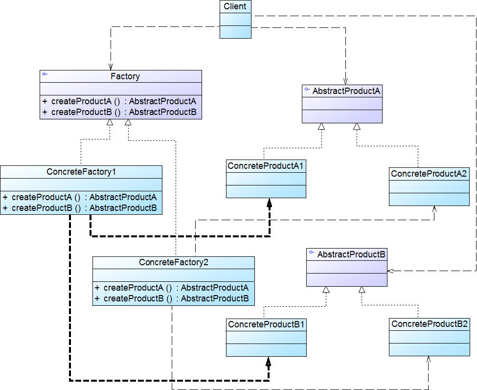
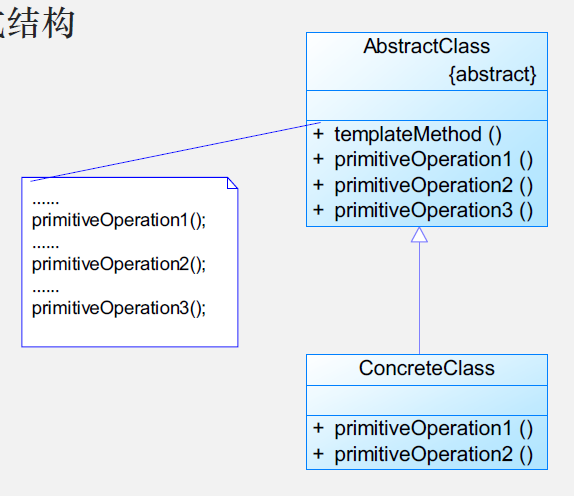
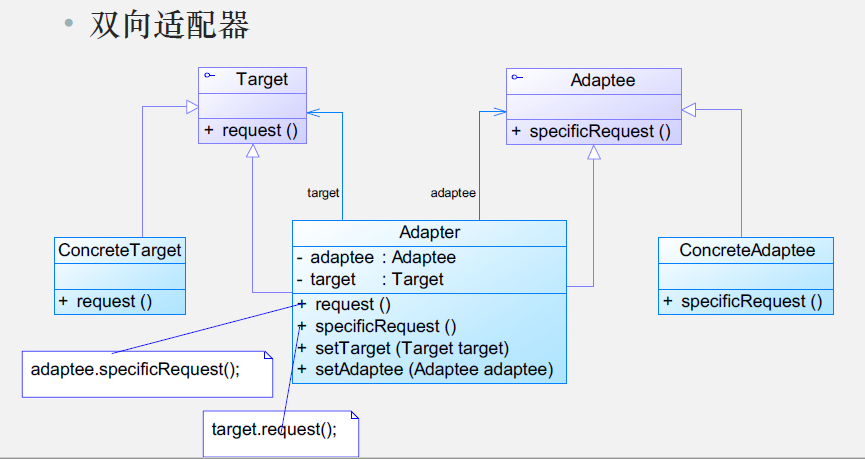
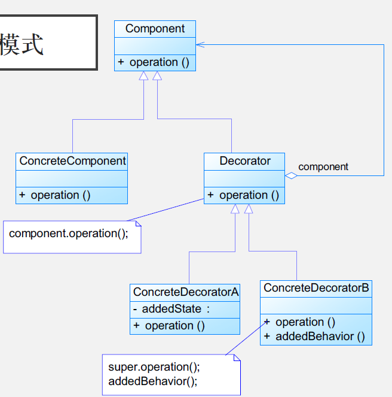
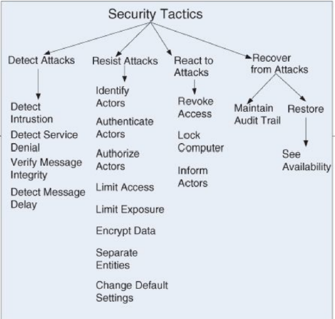
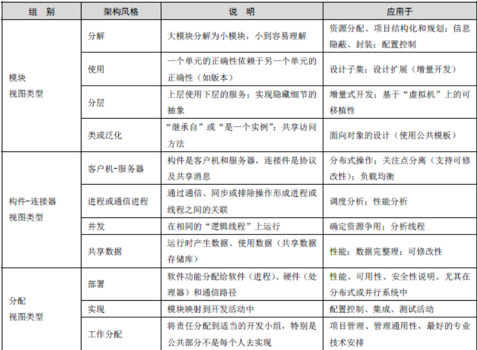

软件系统设计
潘氏
01 软件设计原则
软件设计
需求定义了系统需要满足的目标
规约定义了系统的外部可观察到的行为
架构定义了
- 系统一级的主要组成部分
- 各部分的交互方法
- 使用的技术
设计定义了
- 如何完成任务
- 需要写的代码
- 我们将专门关注OO设计
面向对象设计原则
单一职责原则
类的职责要单一，不能将太多的职责放在一个类中
- 一个类承担的职责越多，被复用的可能性越小
- 数据职责、行为职责
- 是实现高内聚、低耦合的指导方针
开闭原则
一个软件实体应当对扩展开放，对修改关闭。
- 抽象化是开闭原则的关键
里氏代换原则
所有应用基类（父类）的地方必须能透明地使用其子类的对象。
- 是实现开闭原则的重要方式之一。
依赖倒转原则
要针对接口编程，不要针对实现编程。
- 关键是抽象化
- 是面向对象设计的主要手段
接口隔离原则
一旦一个接口太大，则需要将它分割成一些更细小的接口，使用该接口的客户端仅需知道与之相关的方法即可。
- 一个接口就只代表一个角色，每个角色都有它特定的一个接口。
- 接口仅仅提供客户端需要的行为。
- 必须满足单一职责原则
- 可以为不同的客户端提供宽窄不同的接口
合成复用原则
尽量使用对象组合，而不是继承来达到复用的目的
- 尽量使用组合/聚合关系，少使用继承
- 可以使系统更灵活
迪米特法则
对其他实体引用越少越好，不要和“陌生人”讲话
朋友包含
- 当前对象
- 以参数形式传入当前对象方法中的对象
- 当前对象的成员对象
- 若当前对象的成员对象是一个集合，集合中的元素都是朋友
- 当前对象创建的对象
小结
目标：开闭原则
指导：迪米特法则
基础：单一职责原则、可变性封闭原则
实现：依赖倒转原则、合成复用原则、里氏替换原则、接口隔离原则

02 策略模式
策略模式
目的
应对可能会发生的变化
- 一方面来自需求，另一方面来自内驱
去除易于变化的一部分，封装可变性
UML图
模式衍生
- 消除硬编码导致的过长if-else语句
模式实例
适用场景
- 许多相似的类只是在行为上有所不同
- 需要一个算法的不同变体
- 某个类有许多行为，并且这些行为通过很多条件控制语句执行
- 避免用户知道复杂算法使用的数据/结构
优点
- 策略类定义了一组基于上下文的算法
- 替代了子类
- 消除了大量的条件分支语句
缺点
- 客户端必须知道不同策略之间的差异
- 上下文与策略之间的通信开销
- 增加了类的个数
03 工厂模式
简单工厂模式
模式动机
- 基于同一行为创建不同的实体
- 可能根据参数的不同返回不同的对象
UML图
优点
- 实现了对职责的分割，提供专门工厂类负责对象创建，与对象本身业务处理分离，降低了系统的耦合度
- 客户端无需知道所创建的具体产品类的类名，只需要知道具体产品类所知道的参数即可
- 通过引入配置文件可以在不修改任何客户端代码的情况下更换和增加新的具体产品
缺点
- 工厂类集中了所有的产品创建逻辑
- 增加了类的个数
- 系统扩展有点困难，一旦增加新产品不得不修改工厂逻辑，产品较多难以维护
适用环境
- 工厂类负责创建对象较少
- 客户端只知道传入的参数，对创建过程不关心
工厂方法模式
模式动机
- 解决当有产品加入时就要修改工厂类的代码，违反开闭原则的问题
UML图
实例
优点
- 用户只需要关心所需产品对应的工厂，无需关心细节
- 工厂可以自主确定创建何种产品，创建过程封闭在具体工厂内部
- 符合开闭原则
缺点
- 需编写新的具体产品类的同时要提供与之对应的具体工厂，系统中类的个数成对增加。增加系统复杂度
- 增加了系统抽象性和理解难度
适用环境
- 一个类不知道它所需要的对象的类
- 一个类通过其子类来指定创建哪个对象
- 客户端无需关心是哪个工厂子类创建产品子类，需要时动态指定
抽象工厂
模式动机
- 提供多个产品对象
UML图

模式示例
优点
- 隔离具体类生成，改变具体工厂示例就可以在某种程度上改变整个软件系统行为
- 可以实现高内聚低耦合
- 保证客户端用的都是同一产品族内的对象
缺点
- 难以扩展抽象工厂用来生产新品种的产品
- 开闭原则的倾斜性
适用场景
- 系统不依赖于产品示例创建、组合表达的细节
- 有多个产品族
- 属于同个产品族的产品将在一起使用
- 所有产品以相同接口出现
04 创建型模式
建造者模式
模式动机
将一个复杂对象的构建与它的表示分离，使得同样的构建过程可以创建不同的表示
UML图
模式实例
优点
- 客户端不必知道产品内部组成的细节，将产品本身与产品的创建过程解耦，使得相同的创建过程可以创建不同的产品对象 。
- 用户使用不同的具体建造者即可得到不同的产品对象 。
- 可以更加精细地控制产品的创建过程。
- 增加新的具体建造者无须修改原有类库的代码，指挥者类针对抽象建造者类编程，系统扩展方便，符合“开闭原则”。
缺点
- 如果产品之间的差异性很大，则不适合使用建造者模式，因此其使用范围受到一定的限制
- 如果产品的内部变化复杂，可能会导致需要定义很多具体建造者类来实现这种变化，导致系统变得很庞大 。
适用环境
- 需要生成的产品对象有复杂的内部结构，这些产品对象通常包含多个成员属性。
- 需要生成的产品对象的属性相互依赖，需要指定其生成顺序。
- 对象的创建过程独立于创建该对象的类。在建造者模式中引入了指挥者类，将创建过程封装在指挥者类中，而不在建造者类中。
- 隔离复杂对象的创建和使用，并使得相同的创建过程可以创建不同的产品。
原型模式
模式动机
- 克隆出多个与原型对象一模一样的对象
- 原型模式通过给出一个原型对象来指明所要创建的对象的类型 然后用复制这个原型对象的办法创建出更多同类型的对象
UML图
模式实例
优点
- 简化对象的创建过程 ，通过一个已有实例可以提高新实例的创建效率
- 动态增加或减少产品类
- 简化的创建结构
- 可以使用深克隆的方式 保存对象的状态
缺点
- 需要为每一个类配备一个克隆方法
- 实现深克隆时需要编写较为复杂的代码
适用环境
- 创建新对象成本较大
- 系统要保存对象的状态
- 避免使用分层次的工厂类来创建分层次的对象
05 状态与命令模式
状态模式
模式动机
- 一个对象的行为取决于一个或多个动态变化的属性
UML图
模式实例
优点
- 封装了转换规则。
- 枚举可能的状态，在枚举状态之前需要确定状态种类。
- 将所有与某个状态有关的行为放到一个类中，并且可以方便地增加新的状态，只需要改变对象状态即可改变对象的行为。
- 允许状态转换逻辑与状态对象合成一体，而不是某一个巨大的条件语句块。
- 可以让多个环境对象共享一个状态对象，从而减少系统中对象的个数。
缺点
- 状态模式的使用必然会增加系统类和对象的个数。
- 状态模式的结构与实现都较为复杂，如果使用不当将导致程序结构和代码的混乱。
- 状态模式对“开闭原则”的支持并不太好
适用环境
- 对象行为依赖状态
- 代码包含大量与状态有关的条件语句
模式应用
工作流（批文状态：：尚未办理；正在办理；正在批示；正在审核；已经完成）
RPG游戏程序（开始、运行、结束）
命令模式
模式动机
- 请求发送者与请求接收者消除彼此之间的耦合
- 发送者与接收者之间没有直接引用关系，发送请求的对象只需要知道如何发送请求，而不必知道如何完成请求。
UML图
模式实例
优点
- 降低系统耦合度
- 新的命令可以很容易地加入系统中
- 可以比较容易地设计一个命令队列和宏命令
- 可以方便地实现对请求的Undo和Redo
缺点
- 导致某些系统有过多的具体命令类
适用环境
- 需要请求调用者和请求接收者解耦
- 需要在不同的时间指定请求、将请求排队和执行请求
- 需要支持命令的撤销和恢复
- 需要将一组操作组合在一起
模式扩展
06 行为型模式
观察者模式 （一对多）
模式动机
- 建立一种对象与对象之间的依赖关系，一个对象发生改变时将自动通知其他对象，其他对象将相应做出反应
- 发生改变的对象称为观察目标，而被通知的对象称为观察者，一个观察目标可以对应多个观察者
UML图
模式实例
优点
- 可以实现表示层和数据逻辑层的分离
- 建立一个抽象的耦合
- 支持广播通信
- 符合“开闭原则”
缺点
- 将所有的观察者都通知到会花费很多时间
- 循环依赖可能导致系统崩溃
- 没有相应的机制让观察者知道所观察的目标对象是怎么发生变化的
适用环境
- 一个抽象模型有两个方面，其中一个方面依赖于另一个方面。将这些方面封装在独立的对象中使它们可以各自独立地改变和复用。
- 一个对象的改变将导致其他一个或多个对象也发生改变，而不知道具体有多少对象将发生改变，可以降低对象之间的耦合度。
- 一个对象必须通知其他对象，而并不知道这些对象是谁。
- 需要在系统中创建一个触发链
中介者模式
模式动机
- 减少对象两两之间复杂的引用关系，使之成为一个松耦合的系统
UML图
模式实例
优点
- 简化了对象之间的交互。
- 将各同事解耦。
- 减少子类生成。
- 可以简化各同事类的设计和实现。
缺点
- 具体中介类可能会非常复杂，难以维护
适用环境
- 对象之间存在复杂的引用关系
- 难以复用某个对象
- 想通过一个中间类来封装多个类中的行为，又不想生成太多的子类
模板方法模式
模式动机
- 将相同的代码放在父类，不同的方法实现放在不同的子类中
UML图

模式实例
优点
- 是一种代码复用的基本技术
- 符合“开闭原则”
缺点
- 导致类的个数增加
适用环境
- 一次性实现不变的行为，可变的行为留给子类
- 公共的行为应该提取出来集中到一个公共父类
- 对一些复杂的算法分割
- 控制子类的扩展
07 适配器和组合
适配器模式
模式动机
- 客户端可以通过目标类的接口访问它所提供的服务
- 适配器可以使由于接口不兼容而不能交互的类可以一起工作
UML图

模式实例
优点
将目标类和适配者类解耦
增加了类的透明性和复用性
灵活性和扩展性都非常好
类适配器
- 可以在适配器类中置换一些适配者的方法，使得适配器的灵活性更强
对象适配器
- 同一个适配器可以把适配者类和他的子类都适配到目标接口
缺点
类适配器
- Java, C#等不支持多重继承的语言，使用有一定局限性
对象适配器
- 相比类适配器，想要置换适配者类的方法就不容易。需要先定义-个子类，再置换掉适配者类的方法，用子类当做真正适配者
适用环境
- 系统需要使用现有类，这些类的接口不符合系统的需要
- 想建立一个可以重复使用的类,用于与-些彼此之间没有太大关联的类一起工作
模式扩展

组合模式
模式动机
- 组合模式描述了如何将容器对象和叶子对象进行递归组合，使用户在使用时无需对他们进行区分，一致对待容器对象和叶子对象
- 组合多个对象形成树形结构，对单个对象“叶子对象”和多个对象”容器对象”的使用具有一致性
UML图
模式实例
优点
- 可以定义分层次的复杂对象
- 客户端可以一致的使用组合结构或其中单个对象。
- 可以形成复杂的树形结构
- 更容易在组合体内加入对象构件
缺点
- 设计变得更加抽象
- 很难对容器中的构件类型进行限制
适用场景
- 需要表示一个对象整体或部分层次
- 客户端可以针对抽象构建编程，无须关心对象层次结构的细节
- 对象的结构是动态的并且复杂程度不一样，但客户需要一致地处理它们。
08 桥接与装饰者
桥接模式
模式动机
- 桥接模式将继承关系转换为关联关系，从而降低了类与类之间的耦合，减少了代码编写量。
- 两个变化维度
UML图
模式实例
优点
- 分离抽象接口及其实现部分。
- 桥接模式是比多继承方案更好的解决方法。
- 提高了系统的可扩充性
- 实现细节对客户透明，可以对用户隐藏实现细节
缺点
- 增加系统的理解与设计难度
- 其使用范围具有一定的局限性
适用环境
- 需要在构件的抽象化角色和具体化角色之间增加更多的灵活性，避免在两个层次之间建立静态的继承联系，通过桥接模式可以使它们在抽象层建立一个关联关系。
- 抽象化角色和实现化角色可以以继承的方式独立扩展而互不影响
- 存在两个独立变化的维度
- 不希望使用继承或因为多层次继承导致系统类的个数急剧增加的系统
装饰模式
模式动机
- 装饰模式可以在不需要创造更多子类的情况下，将对象的功能加以扩展。
UML图

模式实例
优点
- 装饰者模式可以提供比继承更多的灵活性
- 可以通过一种动态的方式来扩展一个对象的功能
- 通过使用不同的具体装饰类以及这些装饰类的排列组合，可以创造出很多不同行为的组合。
- 具体构件类与具体装饰类可以独立变化
缺点
- 将产生很多小对象
- 比继承更加易于出错，排错也很困难，对于多次装饰的对象，调试时寻找错误可能需要逐级排查，较为烦琐。
适用环境
- 以动态、透明的方式给单个对象添加职责。
- 需要动态地给一个对象增加功能，这些功能也可以动态地被撤销。
- 当不能采用继承的方式对系统进行扩充或者采用继承不利于系统扩展和维护时
09 结构型模式
外观模式
模式动机
- 引入外观角色之后，用户只需要直接与外观角色交互，用户与子系统之间的复杂关系由外观角色来实现，从而降低了系统的耦合度。
UML图
模式实例
优点
- 对客户屏蔽子系统组件，减少了客户处理的对象数目并使得子系统使用起来更加容易
- 实现了子系统与客户之间的松耦合关系
- 降低了大型软件系统中的编译依赖性，并简化了系统在不同平台之间的移植过程
- 只是提供了一个访问子系统的统一入口，并不影响用户直接使用子系统类
缺点
- 不能很好地限制客户使用子系统类
- 在不引入抽象外观类的情况下，增加新的子系统可能需要修改外观类或客户端的源代码，违背了“开闭原则“
适用环境
- 当要为一个复杂子系统提供一个简单接口时可以使用外观模式
- 客户程序与多个子系统之间存在很大的依赖性
- 在层次化结构中，可以使用外观模式定义系统中每一层的入口，层与层之间不直接产生联系，而通过外观类建立联系，降低层之间的耦合度。
模式扩展
享元模式
模式动机
- 当对象数量太多时，将导致运行代价过高，带来性能下降等问题
- 享元模式通过共享技术实现相同或相似对象的重用。
- 可以共享的相同内容称为内部状态(IntrinsicState)
- 需要外部环境来设置的不能共享的内容称为外部状态(Extrinsic State)
UML图
模式实例
优点
- 极大减少内存中对象的数量
- 享元对象可以在不同的环境中被共享
缺点
- 享元模式使得系统更加复杂，需要分离出内部状态和外部状态，这使得程序的逻辑复杂化。
- 为了使对象可以共享，享元模式需要将享元对象的状态外部化，而读取外部状态使得运行时间变长。
适用环境
- 有大量相同或者相似的对象
- 大部分状态都可以外部化
- 应当在多次重复使用享元对象时才值得使用享元模式。
代理模式
模式动机
- 一个客户不想或不能直接引用一个对象，此时可以通过一个称为”代理”的第三者实现间接引用。
- 代理对象可以在客户端和目标对象之间起到中介的作用，并且可以通过代理对象去掉客户
不能看到的内容和服务或者添加客户需要的额外服务。
UML图
模式应用
优点
- 协调调用者和被调用者
- 远程代理使得客户端可以访问在远程机器上的对象
- 虚拟代理通过使用一个小对象来代表一个大对象，可以减少系统资源的消耗，对系统进行优化并提高运行速度
- 保护代理可以控制对真实对象的使用权限。
缺点
- 可能会造成请求的处理速度变慢。
- 实现代理模式需要额外的工作，有些代理模式的实现非常复杂。
适用环境
- 远程代理
- 虚拟代理
- Copy-on-Write代理
- 保护(Protect or Access)代理
- 缓冲代理
- 防火墙代理
- 智能引用代理
10 防御式编程
概念
通过预见到（或至少预先推测到）问题所在，断定代码中每个阶段可能出现的错误，并做出相应的防范措施，来防止类似意外的发生
技巧
- 使用好的编码风格和合理的设计
- 不要仓促地编写代码
- 不要相信任何人
- 编写清晰而非简洁的代码
- 不让其他人做不该做的修补工作
- 编译时打开所有警告开关
- 检查所有的返回值
- 在声明位置初始化所有变量
- 尽可能推迟一些变量声明
- 使用安全的数据结构
- 使用标准语言工具
- 审慎地进行强制转换
断言
定义
- 在开发期间使用的、让程序在运行时进行自检的代码
- 作为对开发人员的警告
- 通常是一个子程序或宏
- 断言为真，表示程序运行正常；为假，表示代码中出现了意料之外的错误
用途
- 输入参数或输出参数的取值处于预期的范围内
- 子程序开始（或结束）执行时，文件或流是处于打开（或关闭）的状态
- 子程序开始（或结束）执行时，文件或流的读写位置处于开头（或结尾）处
- 文件或流已用只读、只写或可读可写方式打开
- 仅用于输入的变量的值没有被子程序所修改
- 指针非空
- 传入子程序的数组或其他容器至少能容纳X 个数据元素
- 表已初始化，存储着真实的数值
- 子程序开始（或结束）执行时，某个容器是空的（或满的）
- 一个经过高度优化的复杂子程序的运算结果和相对缓慢但代码清晰的子程序的运算结果相一致
何时使用
- 断言主要用于开发和维护阶段
- 帮助查清相互矛盾的假定
- 预料之外的情况
- 传给子程序的错误数据等
注意
断言是提高软件质量技术的有益辅助手段
- 可看作是可执行的注解
- 相比注释，能更主动地对程序中的假定作出说明
不能依赖断言来让代码正常工作
- 最佳方式是在一开始不要在代码中引入错误
断言不能有任何副作用
断言 vs. 错误处理
- 断言处理代码中不应发生的错误
- 错误处理处理那些预料中可能发生的错误
隔栏 vs. 断言
- 隔栏的使用使断言和错误处理有了清晰的区分
- 隔栏部分包含了“脏数据”
- 通过隔离部分之后的是”干净数据“
错误处理
概念
错误处理技术用来处理那些预料中可能要发生的错误情况
方法
- 返回中立值
- 换用下一个正确的数据
- 返回与上一次相同的数据
- 换用最接近的合法值
- 把警告信息记录到日志文件中
- 返回一个错误码
- 调用错误处理子程序或对象
- 显示出错消息
- 用最妥当的方法在局部处理错误
- 关闭程序
健壮性与正确性
- 正确性（correctness） 人身安全攸关的软件
- 指软件按照需求正确执行任务的能力
- 永不返回不准确的结果，哪怕不返回结果也比返回不准确的结果好
- 健壮性（robustness）消费类应用软件
- 指软件对于规范要求以外的输入情况的处理能力
- 要不断尝试采取某些措施，以保证软件可以持续地运转下去，哪怕有时做出一些不够准确的结果
异常
概念
是把代码中的错误或异常事件传递给调用方代码的一种特殊手段
如何对待防御式编程
- 过度的防御式编程也会引起问题
- 正确的态度
11 表驱动法
概念
- 表驱动法是一种编程模式（scheme）
- 从表里面查找信息而不使用逻辑语句（if 和 case）
- 表驱动法适用于复杂的逻辑
- 表驱动法的另一个好处是可以将复杂逻辑从代码中独立出来，以便于单独维护
方式
- 直接访问（ Direct access）
- 索引访问（ Indexed access）
- 节省空间
- 操作索引更廉价
- 阶梯访问（ Stair step access）
贺氏
2021Arch01-introdution
什么是软件架构
SEI
- 是整个程序或计算系统的结构(Structure) ，包含了程序的元素(Software Elements)和那些外部能看见的元素属性(Properties) 和元素之间的关系(Relationship)
IEEE
- 一个系统的基本组织，包含了它的所有组件(Components)、 组件之间的关系、 环境以及指导该系统的设计(Design)和演化(Evolution)的原则(Principle)
Architecture Vs. Design
架构是关于软件的设计
- 所有的架构都是一种软件设计，但是并不是所有的设计都是软件架构
- 架构是设计过程的一部分
其他视角
- 高等级的设计
- 一系列设计决策
- locality
系统的架构/组织
- 元素：组件和连接器
- 关系：动态&静态关系
属性：元素、元素组和整体系统
Architecture Vs. Structure
- 结构将系统分解为组件/模块/子系统
- 架构定义了
- 组件接口
- 组件交互与依赖
- 组件责任
架构指定交互
- 交互包括
- 数据流动
- 控制流动
4+1视图模型
- 逻辑视图：描述了关于架构的架构级别的重要元素和他们之间的关系
- 过程视图：一个架构内的并发和交互元素
- 物理视图：描述主要进程和组件如何被映射到应用程序硬件中
- 开发视图：捕获软件组件的内部组织，例如一个配置管理工具
- 用例视图：捕获架构的需求；不止和一个具体视图有关
软件架构师做什么
- 联络
- 软件工程
- 技术知识
- 危机管理
架构活动
- 为系统创造业务用例
- 理解需求
- 创建并选择架构
- 交流架构
- 分析或评估架构
- 实现架构
- 确保架构的一致性
2021Arch02-quality attributes
软件架构为什么重要
软件架构提供了交互媒介
软件架构表现出最早的一系列设计决策
架构是可转移和可重用的抽象——一对多的映射(一个架构，多个系统)
架构是产品共性的基础。整个产品线共享一个体系结构
系统可以通过体系结构集成独立开发的组件来开发(基于组件的软件工程- CBSE)
软件需求
- 功能需求 Functional requirements
- 功能需求说明系统必须做什么，并说明系统如何为涉众提供价值
- 功能需求是指系统的行为。
- 功能是系统完成其预期工作的能力，例如，允许学生在线注册。
- 功能可以通过使用任意数量的可能结构来实现。
- 功能在很大程度上独立于结构，因为它可以作为一个单独的单片系统存在，而不需要任何内部结构。
- 质量需求 Quality requirements（NFRs）
- 质量要求是整个系统的理想特性。系统应该在其功能需求之上提供的质量属性。
- 质量要求是功能需求或整个产品的资格。
- 如果质量属性很重要，那么软件架构会限制将功能分配(映射)到各种结构上。
- 约束 Constraints
- 约束是零自由度的设计决策
- 约束是预先指定的已经做出的设计决策。
- 通过接受设计决策并将其与其他受影响的设计决策进行协调，可以满足约束。
质量属性
- 刺激源，Source of Stimulus：生成刺激的实体（人、系统或其它刺激器）
- 刺激，Stimulus：是某事物，当其到达系统后需要对其加以考虑
- 环境，Environment：刺激发生时的各种条件
- 制品，Artifact：可能是整个系统，或系统的一部分
- 响应，Response：刺激到达后采取的反应
- 响应度量，Response Measure：能够以某种方式对响应进行度量
Tactics
- 风格或模式应用策略来提供所承诺的好处。
- 战术是一种设计决策（如冗余），影响质量属性响应的控制。
- 战略的集合称为架构策略
- 系统设计由一系列设计决策组成:其中一些决策有助于控制质量属性响应;其他确保系统功能的实现。
Availability
可用性。和整个程序的可靠性(Reliability) 有关，是系统修复故障的能力。通过减少故障来最小化服务中断时间。
刺激-响应图
Tactics
Ping/Echo
- 一个组件发出一个ping，并期望在预定义的时间内从另一个组件得到回音。
- Ping/Echo可以在负责一个任务的一组组件中使用。
Heartbeat
- 一个组件周期性地发出一个心跳消息(也可以携带数据)，另一个组件侦听它。
- 如果心跳失败，则假定发起组件失败，并通知故障纠正组件。
Exception
- 识别故障的一种方法是遇到异常。
- 异常处理程序通常在引入异常的同一进程中执行。
Checkpoint/Rollback
- 检查点记录周期性或响应特定事件而创建的一致状态。
Interoperability
交互操作性。描述多个系统通过接口交换信息的属性，包括交换和正确推断信息。
刺激-响应图

Tactics
发现服务
- 通过搜索已知目录服务定位服务。
编排
- 使用一种控制机制来协调、管理和排序特定的调用服务
定制接口
- 向接口添加或删除功能。
Modifiability
可修改性。用于评估一个更改所消耗的时间和金钱。
刺激-响应图
Tactics
- 分裂模块
- 被修改的模块包含了大量功能，修改成本会很高
- 增加语义一致性:
- 如果一个模块中的职责A和B没有达到相同的目的，那么应该通过创建一个新模块或将职责转移到现有模块中来将它们放在不同的模块中。
- 封装
- 为模块引入了显式接口，减少了对一个模块的更改传播到其他模块的可能性。
- 使用中介
- 打破依赖关系。
- 重构
- 当两个模块受到相同更改的影响时
Performance
性能。关于时间和软件系统满足时间需求的能力。响应时间=处理时间和等待时间
刺激-响应图
Tactics
管理采样率(降低采样频率)
限制事件响应
按优先次序排列。
使用中介体
增加资源
引入并发性
维护数据的多个副本
Security
安全性。衡量系统在向合法用户提供服务的同时，阻止非授权使用的能力。
刺激-响应图
Tactics

- 检测入侵
- 检测服务否认
- 验证消息的完整性
- 限制访问
- 加密数据
Testability
可测试性。通过测试揭示软件缺陷的容易程度。
刺激-响应图
Tactics
- 专门的接口
- 记录/回放
- 限制结构的复杂性
- 限制非确定性
Usability
易用性。用户去完成一个特定任务的容易性程度和系统所提供的用户支持的种类。
刺激-响应图
Tactics
- 拒绝
- 不做
- 暂停/重新开始
- 维护任务模型
- 维护用户模型
- 维护系统模型
X-ability
可变性、可移植性、可伸缩性、可部署性、可复用性.
ASRs
概念
架构上的重要需求(ASR)是对架构有深刻影响的需求——如果没有这样的需求，架构可能会有很大的不同
如何获得
- 需求文档
- 访谈利益相关人员(涉众)
- 理解业务目标
- 效用树（utility tree）
2021Arch03-patterns
架构模式
是在实践中反复发现的一系列设计决策，
已知允许重用的属性，并描述了一类体系结构。
在上下文、问题和解决方法之间建立关系
分层模式
代理模式
MVC模式
管道和过滤器模式
客户端-服务端模式
点对点模式
面向服务的模式

发布-订阅模式
数据共享模式
Map-Reduce模式
多层模式（Multi-Tier Pattern）
和分层的区别
- 多层架构是一种客户端/服务器端架构。在该架构中，表现功能、应用处理和数据管理功能物理分离。
- Layer是水平方向的，tier是垂直方向的
- Tier表示物理分布，layer表示逻辑分布
模式vs.战术（Patterns vs. Tactics）
战术比模式简单
战术是一种设计决策，而模式是一组设计决策的集合
都是架构师的基础工具
战术是设计的建筑基石
大多模式包含几个不同的战术。例如分层模式包含增加内聚，降低依赖的战术
大多数模式也会包含其他模式
2021Arch04-design
通用设计策略
抽象、分解、分治、生成和测试、迭代、重用
ADD
输入：功能需求、质量属性、约束
输出：软件元素、角色、元素职责、元素属性、两个元素之间的关系
确认需求
选择一个系统元素分解
为该元素确认架构必要需求
- H,M,L的二维数组（对利益相关者的重要性，对架构实现的影响）
选择一个符合架构必要需求的设计理念
- 确认设计关注点
- 为次要关注点列出不同的模式和策略
- 选择合适的模式和策略
- 决定架构必要需求和模式策略之间的关系
- 得到架构视图
- 评估并解决不一致问题
列出架构元素并分配职责
定义元素接口
确认需求、为元素构造约束
重复以上步骤直到所有架构必要需求都被满足
2021Arch05-document
为什么记录软件架构
- 沟通和社会化架构设计决策
- 帮助理解和评估体系结构设计决策
- 更新设计师对某些决策的记忆
- 培训架构设计人员
- 支持地理分布的团队
Styles vs. Patterns vs. Views
- Style：关注组件和组件之间的交互和职责限制。更关注架构方法，不包含具体的上下文和问题。
- Pattern：体现软件系统基本的结构组织模式。关注上下文和问题，以及如何解决。
- View：是系统中特定类型的元素及其关系的表示。不同的视图支持不同的目标和用户，强调不同的系统元素和关系，同时在不同程度上表示不同的质量属性。
为什么文档中使用不同视图
- 视图是一组系统元素和它们之间的关系的表示——不是所有的系统元素，而是特定类型的元素。
- 视图让我们将系统实体划分为有趣的和可管理的系统表示。
- 不同的视图支持不同的目标和用户，并突出不同的系统元素和关系。
- 不同的视图在不同程度上暴露不同的质量属性。
连线并为每个样式列出四个视图
- 模块视图Module View
- 分解视图Decomposition view、
- 使用视图Uses view、
- 泛化视图Generalization view、
- 分层视图Layered view、
- 切面视图Aspects view、
- 数据模型视图Data model view
- 组件-连接件视图 C&C View
- Pipe-and-filter view、
- Client-server view、
- Peer-to-peer view、
- Service-oriented view、
- Publish-subscribe view、
- Shared-data view
- Multi-tier view
- 分配视图 Allocation View
- 部署视图Deployment view、
- 安装视图Install view、
- 工作分配视图Work assignment view、
- 其它分配视图

Quality View
- 安全性视图、
- 性能视图、
- 可靠性视图、
- 通信视图、
- 异常视图……
选择视图步骤
建立一个利益相关者的视图表格：不同的利益相关者对不同视图有不同的关注点
合并视图
- 确定上表中的边缘视图
- 将每个边缘视图与其他视图结合
优先级和排序：80/20原则
文档打包Documentation package
把所有views和beyond放一起打包
2021Arch06-guest lecture
软件体系结构的作用
- 涉众(Stakeholder) 进行沟通的手段
- 体系结构是早期设计决策的体现
- 软件体系结构可以支持复用
- 软件体系结构是需求和代码之间的桥梁，为开发提供了建设的蓝图，也是测试、维护和升级的依据。
2021Arch07-evaluation
ATAM(Architecture Tradeoff Analysis Method)
架构权衡分析法
Phase-0：Partnership & Preparation
Stakeholder
- evaluation team leadership and key project decision makers
评估团队领导和关键项目决策者
- evaluation team leadership and key project decision makers
input
- the architecture documentation
架构文档
- the architecture documentation
output
the evaluation plan
评估计划
Phase-1：Evaluation(1)
- Stakeholder
- evaluation team and project decision makers
评估团队和项目决策者
- evaluation team and project decision makers
- Step1~6
- output
- a concise presentation of the architecture .
架构的简洁表示 - articulation of the business goals (drivers)
业务目标(驱动因素)的表达 - a prioritized list of specific quality attribute requirements realized as scenarios
实现为场景的特定质量属性需求的优先级列表 - utility tree
效用树 - risks and nonrisks
风险和非风险 - sensitivity points and tradeoff points
敏感性点和权衡点
- a concise presentation of the architecture .
Phase-2：Evaluation(2)
- Stakeholder
- evaluation team, project decision makers, and architecture stakeholders
评估团队、项目决策者和架构涉众
- evaluation team, project decision makers, and architecture stakeholders
- Step(1)7~9
- output
- a list of prioritized scenarios from the stakeholder community
来自涉众社区的优先场景列表 - risk themes and business drivers threatened by each one
风险主题和商业动机
- a list of prioritized scenarios from the stakeholder community
Phase-3：Follow-up
- Stakeholder
- evaluation team and key stakeholders (evaluation clients)
评估团队和关键干系人(评估客户)
- evaluation team and key stakeholders (evaluation clients)
- output
- the final evaluation report
最终评估报告
- the final evaluation report
Steps
- Step 1：介绍ATAM方法（评估小组组长）
- Step 2：介绍商业动机（项目经理或系统客户）
- Step 3：介绍架构（首席结构师）
- Step 4：识别使用的架构方法（评估小组）
- Step 5：生成质量属性效用树（评估小组和项目设计决策者）决定性的一步
- Step 6：分析架构方法（评估小组）确保方法是正确的获得风险点、非风险点、敏感点和权衡点列表
- （Step 1）：介绍ATAM方法和之前的结果（评估小组组长）重复以确保涉众也知道方法并回顾分享之前2~6步的结果
- Step 7：头脑风暴、场景划分优先级（评估小组问涉众）与质量属性效用树进行比对
- Step 8：分析架构方法（评估小组、架构师）使用新产生的优先级靠前的场景、架构师解释与之相关的架构决定
- Step 9：展示结果（评估小组）